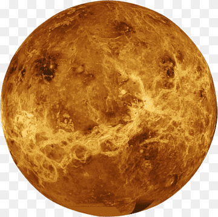

Vênus, frequentemente chamado de "gêmeo da Terra" devido ao tamanho semelhante, é o segundo planeta mais próximo do Sol. No entanto, suas condições são extremas, com uma atmosfera densa composta principalmente de dióxido de carbono, que cria um efeito estufa intenso. As temperaturas em Vênus são suficientes para derreter chumbo, e sua superfície é caracterizada por vastas planícies vulcânicas e altas montanhas. A pesquisa espacial visa entender melhor os mistérios deste planeta inóspito.